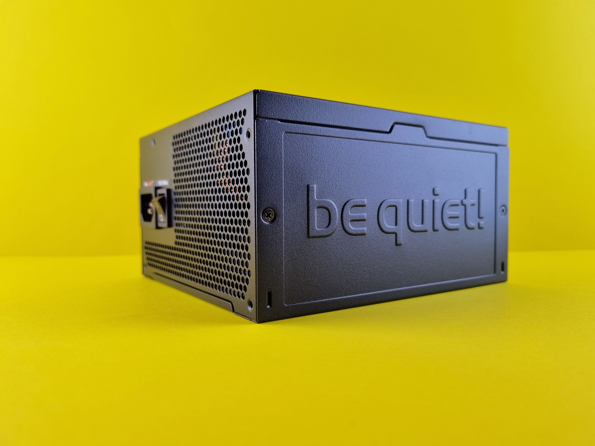

Welcome to the Power Supply Unit Zone!
Your PC is like a digital superhero, and the power supply unit (PSU) is its trusty sidekick. It provides clean, stable energy to all your computer's components, ensuring your beastly build stays up and running smoothly.
At CheapBeast, we'll help you find the perfect PSU for your build, teaching you about wattage, efficiency ratings, and modularity. Remember, behind every great PC, there's a great power supply unit!
Ready to empower your PC? Let's charge ahead!
PSU Installation:
Step 1:
Choose a power supply with the right wattage and efficiency for your system. Ensure it has the necessary connectors for all your components. Give your PC the power it deserves!Step 2:
Secure the PSU in your case, typically at the bottom or top. Use the provided screws to fasten it. Your PSU needs a cozy home too!Step 3:
Connect the required power cables to your components, such as the 24-pin ATX cable to the motherboard, 8-pin CPU power cable, PCIe power cables for the GPU, and SATA power cables for storage devices. Let there be power!Step 4:
Make sure all cables are securely connected and neatly routed to minimize clutter and promote good airflow. A well-ventilated PC is a happy PC!Step 5:
Double-check all connections and cable management before closing the case. Tidy cables make for a tidy build!Tip:
Opt for a modular PSU to minimize cable clutter and improve airflow inside the case. Less mess, less stress!